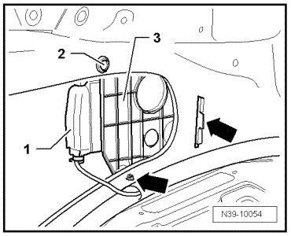

Differential Lock Control Module
Differential Lock Control Module
Removing
- First check whether a coded radio is installed. In this case, find out anti theft coding.
- Switch the ignition and all electrical consumers off, and remove the ignition key.
- Disconnect the ground terminal connector from the battery.
- Remove left rear side trim.
With 4 Zone Climatronic
- Move the rear auxiliary heater and air conditioner unit into the service position.
Continuation for All
- Separate the connector - 1 - at differential lock control module (J647).

- Remove the bolt - 2 -.
- Unclip holder with differential lock control module (J647) - 3 - from structure - arrows - and remove holder with differential lock control module (J647).
Installing
Install in reverse sequence; note the following points:
- First, clip the holder with differential lock control module (J647) - 3 - into structure - arrows -.
- Then, fasten the bolt - 2 - to 2 Nm.
- Connect ground terminal connector to battery and perform the work sequences after connecting the battery.